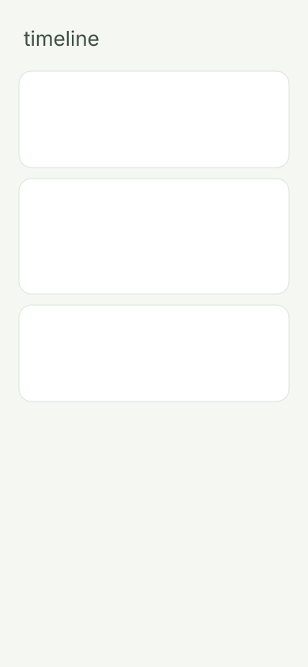
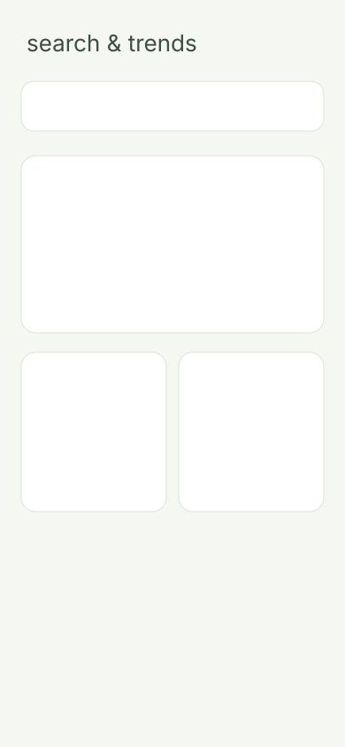
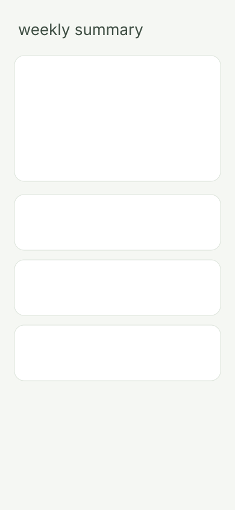

quick daily notes
Capture moments in seconds, without setup friction.
tiny notes, daily memories
life note helps you quickly record small moments throughout your day — meals, walks, workouts, thoughts, todos, and anything you want to remember.
It is not a heavy diary app or a complicated productivity system. life note uses a simple timeline-based design so logging your day stays quick and calm.
available now on the App Store.



Capture moments in seconds, without setup friction.
See your day in a simple chronological flow.
Find what you wrote before, whenever you need it.
Keep small tasks close to your daily notes.
Notice patterns over time with a simple visual overview.
Review your week at a glance and keep perspective.